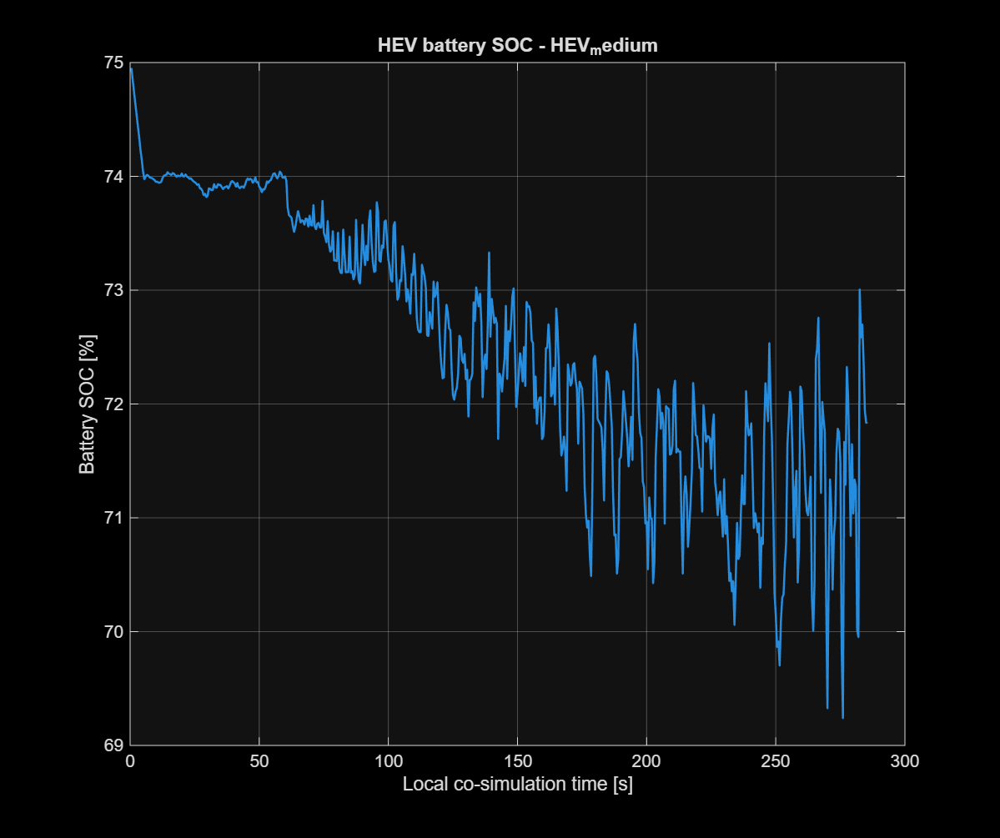
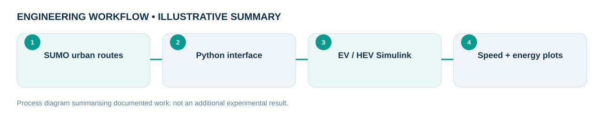

Engineering problem
How can urban traffic demand be connected to electric and hybrid vehicle model simulations to compare speed tracking and energy use?
Built a Rome urban-traffic simulation workflow using SUMO route data and Python interfaces linked with MATLAB/Simulink EV and HEV models. The project contains multiple traffic intensities, vehicle-model files and saved scenario results.
My role and technical ownership
I prepared the SUMO urban-route simulation, Python-to-MATLAB/Simulink interface and archived EV/HEV scenario outputs.
How I approached the work
- Defined different urban traffic intensities and exported driving profiles from SUMO scenarios.
- Linked speed profiles to EV and HEV dynamic models through Python and MATLAB/Simulink scripts.
- Compared reference versus simulated speed, battery charge trends and model energy outputs over traffic cases.
What the evidence shows
The supplied archive contains SUMO inputs, Python scripts, Simulink model files, scenario CSV tables and plotted results. Archived outputs were inspected but not rerun.
Design files, models & results
Original CAD screenshots, simulation plots or project photographs are shown wherever they were available. Select a figure to open the larger file. Workflow graphics are clearly labelled as illustrative.



Limitations and engineering learning
Saved scenario results have not been independently rerun in the current environment; do not interpret equivalent-fuel quantities as laboratory vehicle measurements.
Engineering takeaway: Reported energy/fuel-equivalent figures are model outputs and should not be interpreted as real-vehicle fuel measurements or independently validated emissions.